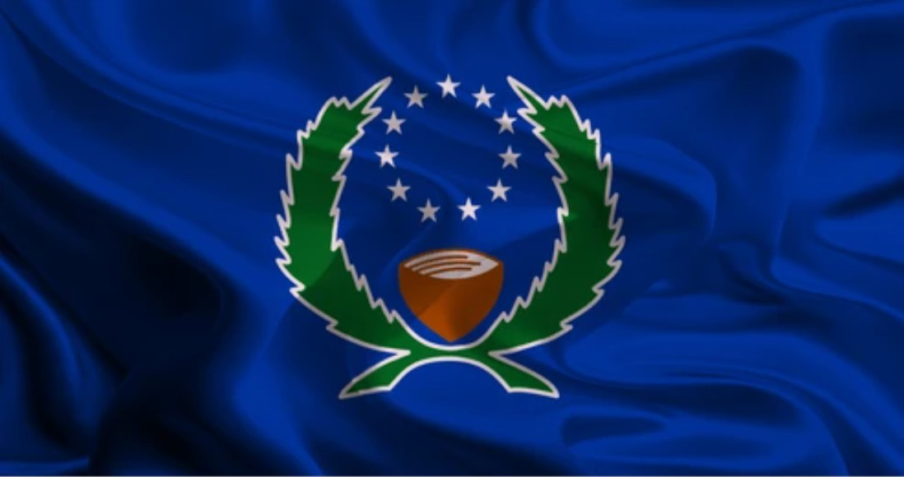

Berny Fred
About Me
My name is Berny Fred, and I am from Micronesia. I am passionate about learning new things and continuously improving myself. I have a growing interest in web development and enjoy exploring new skills that help me create useful and user-friendly websites. I am motivated, curious, and always open to new ideas and opportunities to grow.
Pohnpei, FSM

Pohnpei is a lush, mountainous volcanic island and the capital of the Federated States of Micronesia (FSM). Known as the "Garden Island," it is renowned for high rainfall, dense rainforests, over 40 waterfalls, and the ancient, mysterious basalt ruins of Nan Madol. As the largest and most developed island in the FSM, it offers a deeply traditional culture, rich biodiversity, and significant cultural history.